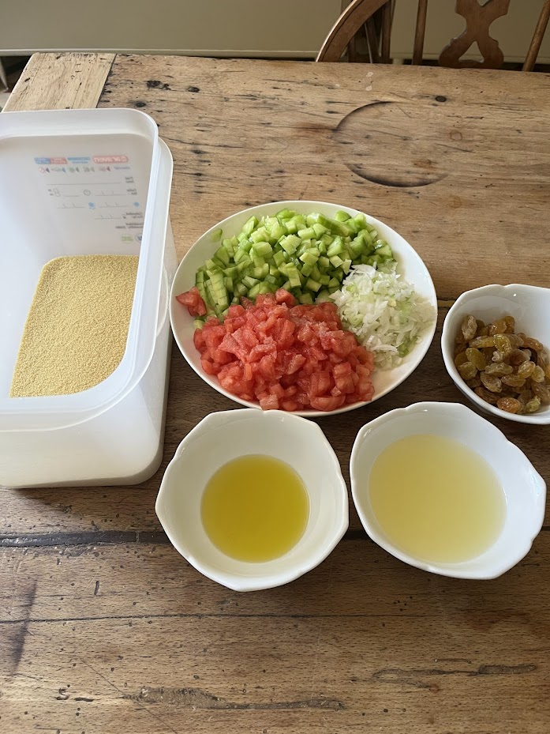

Taboulé
⏱️ 20 min + repos 2h
🔥 Très facile
👥 4 personnes



Étapes
- Versez les 300 g de couscous dans un grand récipient.
- Ajoutez 70 g de jus de citron, 80 g d’eau et 25 g d’huile d’olive. Mélangez soigneusement à la fourchette pour bien détacher les grains.
- Ajoutez 4 g de sel fin et mélangez à nouveau.
- Lavez et séchez la menthe. Retirez toutes les tiges pour ne garder que 35 g de feuilles.
- Mixez les feuilles de menthe avec 70 g d’oignons nouveaux, puis ajoutez ce mélange au couscous. Mélangez.
- Coupez les 2 minis concombres en deux, retirez les graines, puis détaillez-les en petits cubes.
- Coupez les 3 tomates en quartiers, retirez les pépins, puis coupez-les en petits dés.
- Ajoutez les tomates, les concombres et 70 g de raisins secs moelleux dans le couscous.
- Si vous utilisez une boîte hermétique, fermez-la et secouez dans tous les sens pour mélanger parfaitement.
- Placez au réfrigérateur au moins 2 heures avant de servir.
- Dégustez bien frais.